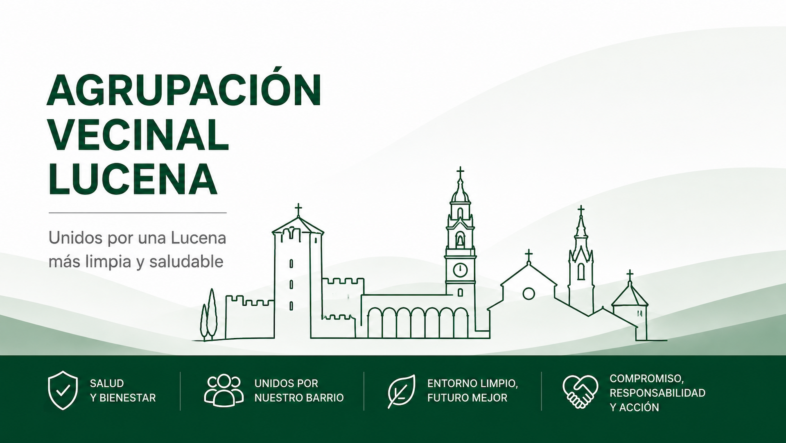

Última actualización: ---
INICIATIVA CIUDADANA · LUCENA (CÓRDOBA)
0
0
Vecinos apoyan la iniciativa
0
Respuestas recibidas
0
Duplicados descartados
Unidos para conseguir un Plan Integral de Control de Plagas
Esta iniciativa nace con el objetivo de solicitar al Ayuntamiento de Lucena la implantación de un programa permanente de prevención, seguimiento y control de cucarachas en el municipio, especialmente en las zonas donde numerosos vecinos vienen comunicando incidencias de forma reiterada.

Una situación que preocupa a numerosos vecinos
En diferentes zonas de Lucena, especialmente en el casco urbano, numerosos vecinos comunican de forma recurrente la presencia de cucarachas en viviendas, patios, cocheras y espacios comunitarios. El objetivo de esta iniciativa es trasladar una petición conjunta para reforzar la prevención y la planificación de las actuaciones municipales.
Viviendas
La presencia de cucarachas afecta a viviendas particulares, patios interiores, garajes y comunidades de propietarios.
Reaparición
Muchos vecinos indican que, tras tratamientos puntuales, las incidencias vuelven a producirse con el paso del tiempo.
Colaboración
La iniciativa pretende canalizar una petición colectiva, respetuosa y constructiva para mejorar la gestión preventiva.
¿Qué solicitamos?
El objetivo no es criticar actuaciones concretas, sino solicitar la implantación de un sistema de control más planificado, preventivo y transparente.
Plan anual
Programación estable durante todo el año.
Prevención
Actuaciones preventivas antes de la aparición masiva.
Seguimiento
Evaluación periódica de los resultados obtenidos.
Información
Comunicación transparente con los vecinos.
Respuesta oficial
Contestación institucional a la solicitud presentada.
Una petición colectiva tiene más fuerza
El objetivo de esta campaña es demostrar que existe un interés real por parte de los vecinos para que se estudie la implantación de un Plan Integral de Control de Plagas. Cada apoyo suma y ayuda a trasladar una petición con mayor representatividad.
Firma
Dedicarás menos de un minuto y tu apoyo quedará registrado para acompañar la solicitud.
Comparte
Envía el enlace mediante WhatsApp, Telegram o redes sociales para que llegue al mayor número posible de vecinos.
Informa
Habla de la iniciativa con familiares, amigos y comunidades de propietarios para conseguir una mayor participación.
Colabora
El objetivo es mejorar la calidad de vida de todos los vecinos mediante una propuesta respetuosa y constructiva.
FORMULARIO DE APOYO
Apoya esta iniciativa vecinal
La participación es completamente gratuita. Los datos facilitados serán utilizados únicamente para gestionar esta campaña y elaborar el listado de apoyos que, en su caso, acompañará al escrito presentado ante el Ayuntamiento.
- ✔ Solo se solicitarán los datos imprescindibles.
- ✔ No se utilizarán con fines comerciales.
- ✔ No serán publicados.
- ✔ Podrás solicitar su eliminación cuando lo desees.
Estado de la iniciativa
La evolución de esta campaña será pública para que cualquier vecino pueda conocer en qué fase se encuentra.
Inicio de la campaña
Publicación de la plataforma y apertura del formulario.
Recogida de apoyos
Fase actual.
Presentación por Registro
El escrito será presentado junto con los apoyos obtenidos.
Respuesta institucional
Se publicará cualquier contestación oficial recibida.
Toda la documentación de la iniciativa
La transparencia es uno de los pilares de esta iniciativa. Toda la documentación importante estará disponible para cualquier ciudadano.
Resolvemos tus dudas
¿Quién organiza esta iniciativa?
Es una iniciativa ciudadana independiente promovida por vecinos de Lucena.
¿Tiene carácter político?
No. No representa a ningún partido político ni asociación.
¿Qué se hace con mis datos?
Únicamente se utilizarán para gestionar esta campaña y los apoyos obtenidos.
¿Se publicarán mis datos?
No. Los datos personales no serán publicados.
¿Puedo retirar mi apoyo?
Sí. Podrás solicitar la eliminación de tus datos en cualquier momento.
¿Cómo conoceré la respuesta del Ayuntamiento?
Se publicará en esta misma página cuando exista una contestación oficial.
CONTACTO
¿Necesitas contactar con nosotros?
Si deseas realizar una consulta, comunicar una incidencia o ejercer tus derechos sobre protección de datos, puedes hacerlo mediante el siguiente correo electrónico.
Compromiso con la protección de tus datos
Esta iniciativa cumple con el Reglamento (UE) 2016/679 (Reglamento General de Protección de Datos - RGPD) y con la Ley Orgánica 3/2018 de Protección de Datos Personales y garantía de los derechos digitales.
Finalidad
Gestionar la recogida de apoyos de esta iniciativa vecinal y, en su caso, acompañar el escrito que será presentado ante el Ayuntamiento de Lucena.
Responsable
El responsable del tratamiento será el promotor de la iniciativa "Lucena sin Cucarachas", cuyos datos completos figurarán en la Política de Privacidad.
Conservación
Los datos se conservarán únicamente durante el tiempo necesario para gestionar la iniciativa y atender las posibles obligaciones legales derivadas de la misma.
Cesión
Los datos no serán cedidos a terceros salvo obligación legal o cuando resulte imprescindible para la finalidad informada al participante.
Tu apoyo puede marcar la diferencia
Cuantos más vecinos participen, mayor representatividad tendrá la petición presentada al Ayuntamiento.